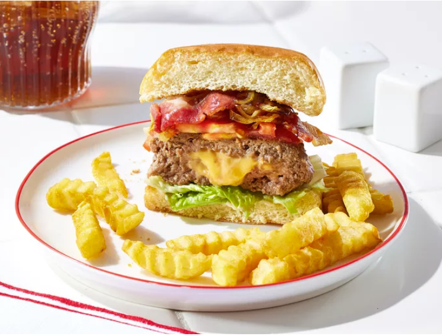

Juicy Lucy Burgers

DESCRIPTION'S:
The Juicy Lucy burger is a favorite of Minnesotans.
It's so good! You must use American cheese on this to achieve the juiciness in the middle.
I like sautéed mushrooms and onions on mine.
Submitted by Cooking Mama | Updated on March 4, 2026
INGREDIENTS:
- 1 ½ pounds ground beef
- 1 tablespoon Worcestershire sauce
- 1 teaspoon black pepper
- ¾ teaspoon garlic salt
- 4 slices American cheese
- 4 hamburger buns, split
STEPS:
- Gather all ingredients.
- Mix ground beef, Worcestershire sauce, pepper, and garlic
salt together in a bowl until well combined.
- Form into eight thin patties, each slightly larger than a cheese slice.
- Cut each slice of American cheese into 4 equal pieces; stack the pieces.
-
Sandwich one stack of cheese between 2 ground beef patties.
-
Tightly pinch the edges together to seal around the cheese.
Be sure to seal tightly, or the cheese will burst through when cooked.
Repeat with the remaining cheese and patties.
-
Heat a large cast-iron skillet over medium heat.
Cook patties in the hot skillet until well browned, about 4 minutes;
they will puff up due to steam from the melting cheese.
-
Flip patties, prick the tops to release steam,
and cook until browned on the other side and no longer pink in the center; about 4 more minutes.
An instant-read thermometer inserted into the center should read at least 160 degrees F (70 degrees C).
-
Serve on hamburger buns.
HOME